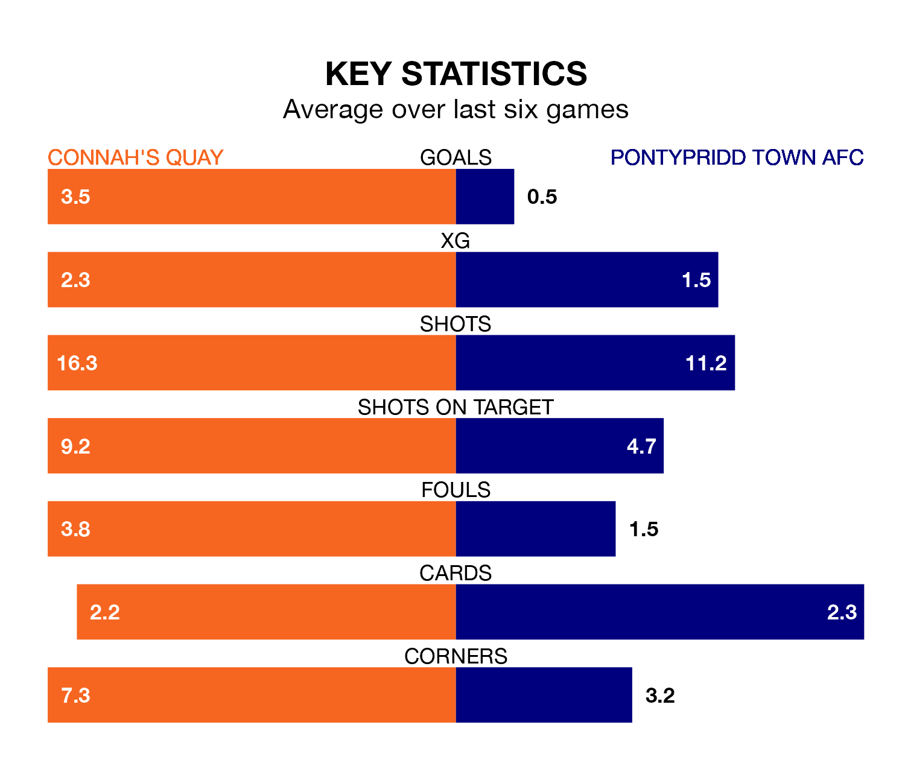

Relegation candidates Pontypridd Town AFC face a challenge away against high-flying Connah's Quay at the Deeside College Stadium on Saturday.
Pontypridd Town AFC are 11th in the Cymru Premier table, and have picked up three wins and four draws in their 18 games to date.
The Nomads, meanwhile, are second in the standings with 38 points, having won 12 and drawn two, and are six points behind table-toppers The New Saints.
Connah's Quay are in reasonable form in the Cymru Premier, with four wins and two losses from their last six games.
With no wins and a draw over that period, Pontypridd Town's form is much worse – they have taken one point from 18, compared to the Nomads' 12.
With 53 goals in 18 games so far this season, the hosts are the league's second-highest scorers with 2.9 goals per game. And they are conceding fewer than average, letting in 23 goals at a rate of 1.3 per game.
The Dragons, meanwhile, are below average scorers, with 0.4 goals per game, compared to a league average of 1.5. They have conceded 1.4 goals per game.
In Jordan Davies, Connah's Quay have the league's most on-form striker so far this season. He has notched 13 goals in 18 appearances.
The away team's top scorers, with two goals each, are Jack Karadogan and Keston Davies.
Connah's Quay's last match was on December 2, a 7-0 win against Barry Town United, with Jack Kenny (two), Callum Sainty (own goal), Harry Franklin, Jordan Davies, Michael Wilde and Ryan Harrington getting the goals for the Nomads.
Pontypridd Town lost 2-1 against Caernarfon Town last time out, also on December 2, with Owain Jones on the scoresheet.
